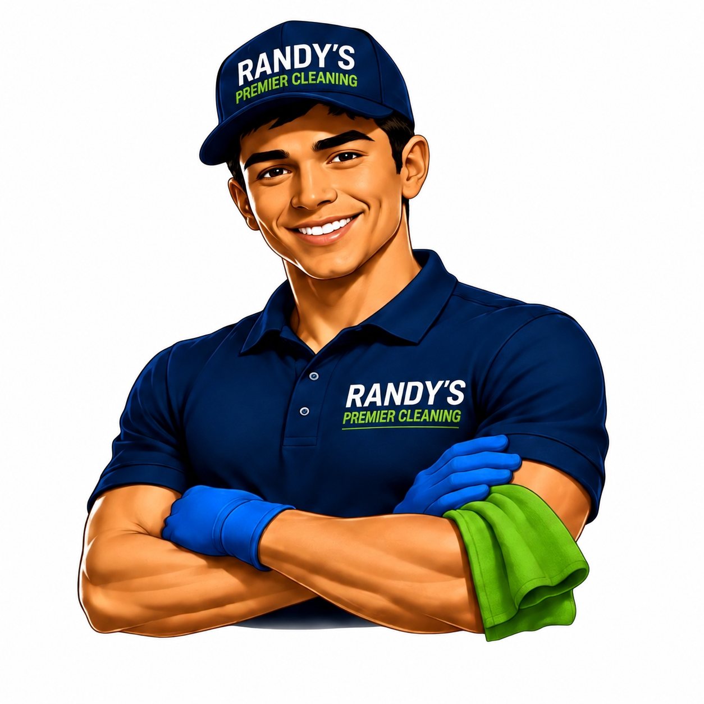

🌀
Thorough Dust Removal
We work high to low and use vacuum dusting wherever practical to capture dust, hair and debris instead of simply moving it around.

Detail-focused home cleaning built around thorough vacuum dust removal, surface-specific care, powered scrubbing, eco-conscious products and strategic steam use where it makes sense.
Steam is one part of our toolkit — not the whole service. We use the method that makes sense for each surface, soil level and room.
We work high to low and use vacuum dusting wherever practical to capture dust, hair and debris instead of simply moving it around.
Steam is used on compatible floors and selected bathroom or hard-surface areas when heat and moisture are appropriate.
Electric scrubbers and detail tools help tackle stubborn buildup without making aggressive scrubbing our first move.
Stone, wood, laminate, stainless, glass and other finishes are identified before we choose a product or technique.
Our process starts at the entrance, moves systematically around each room, and follows a repeatable right-to-left pattern so fewer areas are overlooked.
From documenting the room and clearing surfaces to vacuuming, cleaning, detail scrubbing, selective steam use and a final inspection, every step has a purpose.
Explore the Full SystemRoom-based maintenance cleaning with careful dust removal, kitchens, bathrooms, surfaces and floors.
More time, more detailing and more buildup removal using steam and powered tools where appropriate.
Pantries, cabinets, closets, laundry areas, refrigerators and entire rooms — with optional organizer products billed separately.
An optional lower-chemical steam-focused service for compatible surfaces, with exceptions where steam is unsafe or ineffective.
Interior vacuuming, surfaces, crevices, upholstery-friendly care and detail cleaning by custom quote.
Inside appliances, utility-area surface cleaning, selected exterior cleaning and other detailed projects by quote.
Our pricing is based on the spaces and services you select, not an open-ended hourly meter. Build an estimate in a few minutes.